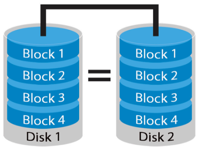

How do data centres store your data?
Press or hover over tiles for more infroamtion
Magnetic Disks (Hard Disk Drives HDD)
Inexpensive spinning disks in an enclosure because they're Fragile

Solid State Drives (SSD)
Expensive but reliable and fast flash memory that has limited uses.
Magnetic Tapes
Very large and not that slow but have to run in a sequence so they're only good for long term storage

What if their equipment breaks down, will my data be lost?
Data centres are built in Tiers which improve the fault tolerance of hardware and systems allowing them to work even if there is a failure. Furtheremore, Your data is split up into chunks and store seperately across all sections of the data centre. As well as using Redundant array of intexpensive drives to store several copies of your data acroos multiple drives so that if one stops working, there are copies that can be recovered.
Methods
Press or hover over tiles for more infroamtion
RAID
Fragmenting
Tiers
Tiers
Press or hover over tiles for more infroamtion
Tier 1
Low cost barebone solution wtih no redundant capacity reuslting in basic performance
Tier 2
At a higher cost, redundant power and cooling which increases the performance and availability
Tier 3
More costly but provides dual power supples and data links increasing availabilty
Tier 4
Full hardware, cooling, power and data link redundancy giving it the best availability at the highest price.
What happens if they have a disaster such as a flood?
Data centres are designed with N+N redundancy meaning that key aspects of the data centre such as power have multiple sources to prevent the data centre going offline if one source fails.